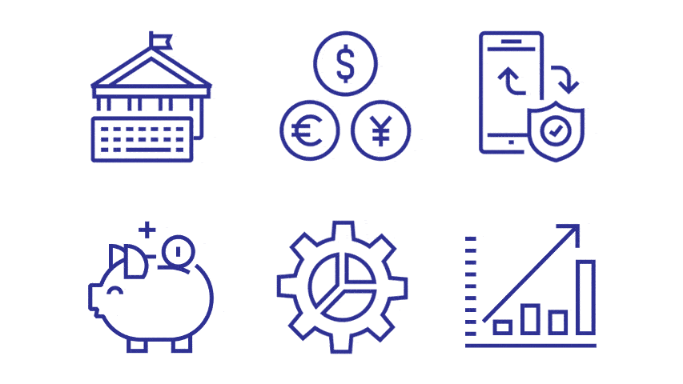

💸 The Pulse of the Bank – Decoding Money, Movement & Margins
In today’s competitive financial space, banks thrive not just on capital—but on insights. This dashboard takes you under the hood of banking operations, visualizing financial signals that matter:
- 📊 Customer Segmentation and Demographics
- 🏦 Average Balance and Loan Portfolio Monitoring
- 📈 Transaction Trends across Channels
- 💡 Profitability by Branch and Region

From executive overviews to operational insights, this Power BI solution empowers institutions to spot inefficiencies, improve financial KPIs, and deliver tailored services across segments.
🧰 Tools Used
Power BI · DAX · Relationship Modeling · Financial Analytics · KPI Design